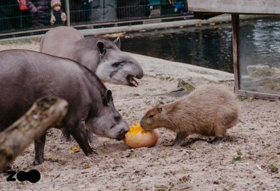

Kapibara
Sākums
Bioloģija
Dzīvesveids
Fakti
Interesanti fakti
Kapibara var gulēt ūdenī ar izvirzītu degunu virs ūdens.
Tās ir ļoti sabiedriskas un bieži redzamas kopā ar citiem dzīvniekiem.
Kapibaras var svērt līdz 65 kg!
